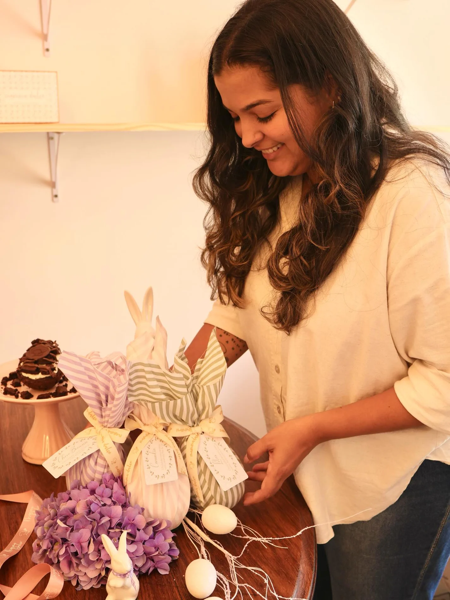
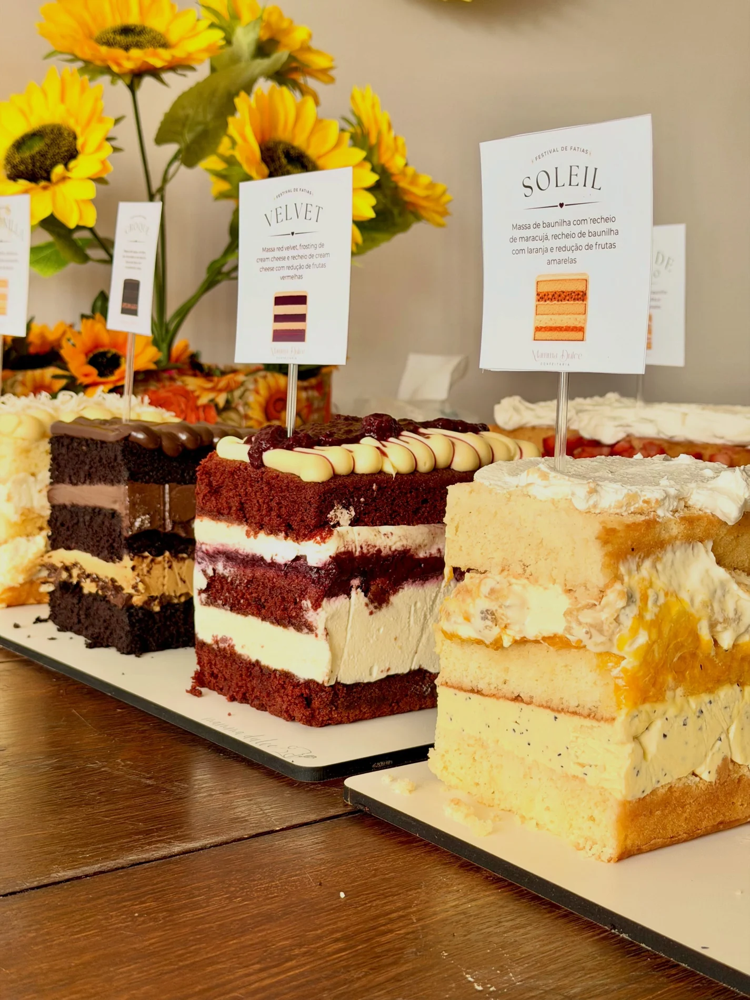

DELICADEZA EM CADA PÉTALA
01POR JACIARA SIMÕES · ARACRUZ, ES
A sua história,
em forma
de bolo.
Para os grandes dias. Para os pequenos motivos.
Bolos artísticos, sabores autorais e carinho
em cada detalhe.

Flores e joaninhas, inspiradas em um vestidinho.
Os detalhes da sua história viram criação.
01 / NOSSAS CRIAÇÕES
Um doce jeito
de ser inesquecível.
Cada celebração tem seu jeito.
O bolo também deve ter.
Conheça um pouco do que criamos por aqui.
PARA O COMEÇO DE UMA HISTÓRIA
02O grande sim
CARINHO QUE VEM EMBRULHADO
03Um presente, um afeto
DO SEU JEITINHO
04Encanto em forma de laço
A VIDA MERECE SER CELEBRADA
05Um jardim de motivos
SABORES PARA COMPARTILHAR
06Pequenas descobertas
Um pedacinho das nossas criações. Coleções sazonais e disponibilidade, sob consulta.


02 / A ALMA DA MAMMA DULCE
Mãos que criam.
Um coração
que se entrega.
Por trás de cada criação está a Jaciara. O olhar atento às texturas, o cuidado para encontrar o equilíbrio dos sabores e a vontade de fazer um bolo que pertença à sua história.
A Mamma Dulce cresce com fé no propósito, gratidão por quem caminha junto e amor por receber cada pessoa no ateliê. Da família à equipe, tem muita gente e muito afeto em tudo que chega à sua mesa.
“Cada bolo carrega um pedacinho do meu coração.”JACIARA SIMÕES · CONFEITEIRA E CRIADORAConheça mais do nosso dia a dia
03 / POR DENTRO DA DOÇURA
Bonito de ver.
Difícil de esquecer.
Massas amanteigadas, recheios cremosos
e encontros de texturas.
O encanto continua na primeira colherada.

CADA CAMADA, UMA DESCOBERTA.01Caramélia AUTORIA DA CASA
O nosso encontro de chocolate, caramelo flor de sal e crocante de avelã. Uma criação autoral da Jaciara, repensada camada por camada até encontrar o equilíbrio que ela imaginava.
CACAU · CARAMELO FLOR DE SAL · AVELÃ02Franoá
Massa de cacau com recheio de cacau, recheio de baunilha e redução de framboesa. Cremoso, intenso e com o frescor das frutas.
CACAU · BAUNILHA · FRAMBOESA03Lotus
No festival de fatias, a massa de baunilha encontra o creme de Biscoff, os pedacinhos de biscoito e mais uma camada desse creme irresistível.
BAUNILHA · BISCOFF · CREME DE BISCOITO04Pistache
Massa de baunilha, recheio de limão e recheio de pistache com redução de frutas vermelhas. Camadas que equilibram delicadeza e personalidade.
PISTACHE · LIMÃO · FRUTAS VERMELHASSabores das nossas criações e festivais. Consulte o menu disponível para sua data e informe restrições alimentares no atendimento.
Me conta mais sobre os saboresO SEU DIA É O NOSSO PONTO DE PARTIDA
Cada história merece
um cuidado só seu.
01 — ESCUTAR
O que faz sentido pra você?
Seu momento, suas referências, os detalhes que contam a sua história. É por aí que a conversa começa.
02 — IMAGINAR
Cada detalhe conversa.
Flores, cores, texturas e sabores em harmonia com a ocasião. Um projeto pensado com identidade.
03 — CELEBRAR
Um pedacinho desse dia.
Na mesa, na primeira fatia ou na lembrança que vai pra casa. Um carinho que continua depois da festa.
04 / UM OLHAR DE PERTINHO
Os detalhes
contam histórias.
05 / VAMOS CRIAR ALGO SEU?
ARACRUZ E REGIÃO · ESPÍRITO SANTOQual história
vamos adoçar?
Um casamento, mais um ano de vida,
um presente ou um encontro especial.
Me conta o que você está imaginando.
Vai ser um prazer fazer parte.
Seu momento. Nossa dedicação.@mamma.dulce